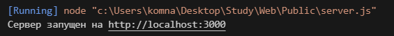
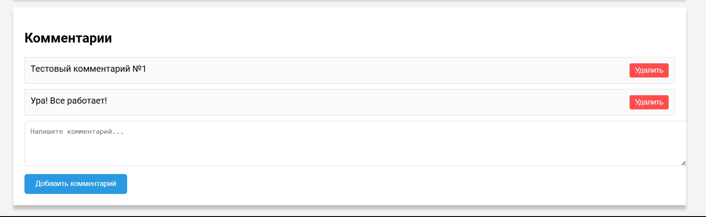
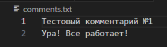

«Новосибирский государственный технический университет»

Министерство науки и высшего образования Российской Федерации
Федеральное государственное бюджетное образовательное учреждение высшего образования
«Новосибирский государственный технический университет»
Лабораторная работа №3
по дисциплине "Основы web-программирования"
Программа на JavaScript.
Кафедра теоретической и прикладной информатики
Новосибирск
2024
Цель работы:
познакомиться с языком сценариев JavaScript, добавить на страницу «О себе» интерактивную функцию комментариев.
Что было сделано в данной работе:
1. Написан и запущен сервер на node.js

2. Написан код на js, html и css, добавляющий на страницу блок(секцию с комментариями).

3. Комментарии сохраняются в txt файл

Вывод:
В ходе выполнения лабораторной работы я углубила свои знания в веб-верстке, научилась писать сервер на Node.js и добавила на страницу «О себе» интерактивную функцию комментариев.